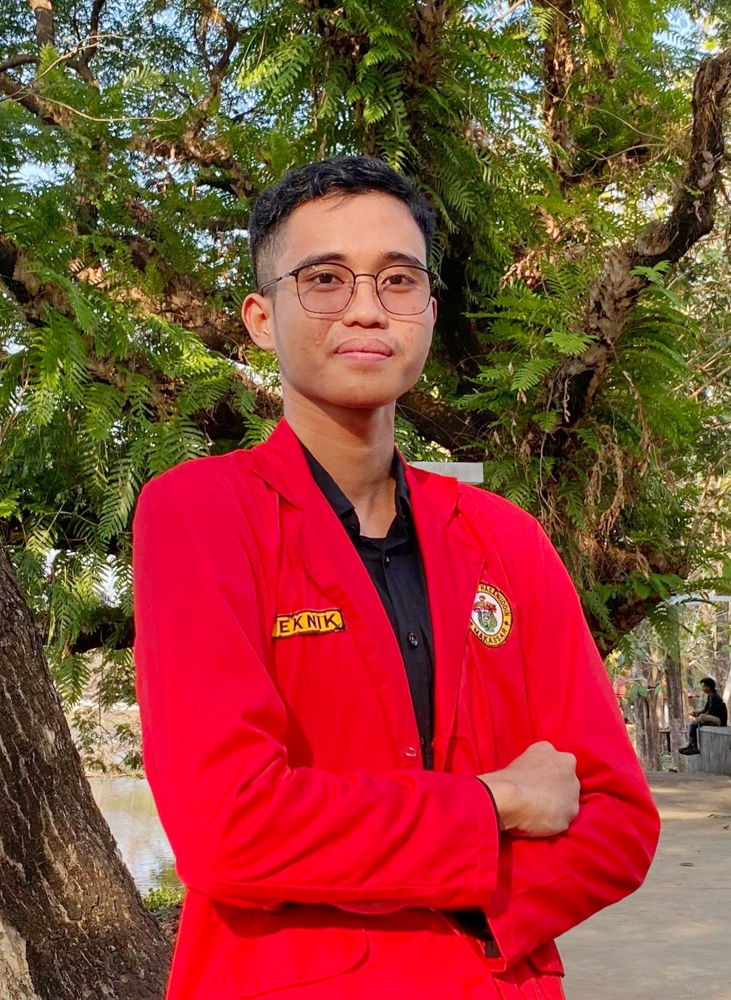

Biodata Diri

Tentang Saya
Halo! Nama saya Farid Wajdi. Saya adalah seorang Mahasiswa Departemen Teknik Informatika di Universitas Hasanuddin.
Saya suka belajar hal-hal baru dan saat ini sedang belajar membuat website dari nol!
Pendidikan
- 2023 - Sekarang: Universitas Hasanuddin - Teknik Informatika
- 2020 - 2023: SMKS Darul Arqam Gombara Makassar - Rekayasa Perangkat Lunak
Hobby
- Membaca Buku
- Ngoding
- Bermain Game
- Menonton Film
Hubungi Saya
Anda bisa menemukan saya di:
LinkedIn |
GitHub